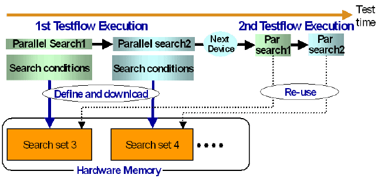

Reusing Search Conditions
Suppose that
- a number of devices of the same type is tested with the same testflow in a loop,
- the testflow contains one or more parallel searches, and
- the search conditions are the same for every loop repetition (which is not always the case, see Managing Search Conditions with Variables).
Since downloading the search conditions is rather time consuming, the throughput of such a test would be considerably improved if the conditions could be downloaded only once, at the first execution of the testflow, and then be reused for the following executions. To achieve this, the SEARCH_FUNC_TASK API stores the search conditions persistently in so-called search sets. The search sets are created at the first testflow execution and reused for the following loop repetitions. If the testflow contains several parallel searches with different conditions, then these different conditions are stored in different search sets (for an exception, see Managing Search Conditions with Variables).
The following figure illustrates the principle and also indicates the throughput improvement for the second test execution:

The maximum number of search sets that can be created is 128. Search sets 1 and 2 are not used by the API, but are reserved for emergency situations. Thus, the API can create at most 126 search sets. When this number is exceeded, the API will use search set 1 for all additional parallel searches. All search conditions that are written into this reserved set will have to be downloaded at every testflow execution, which will impair the throughput optimization.
The SEARCH_FUNC_TASK API therefore tries to minimize the number of required search sets by applying the following principles:
- A new search set is only created for a collection of search conditions if no existing search
set contains exactly these conditions. If such a search set already exists, this set is reused.
This principle also serves to reduce the test time by avoiding unnecessary downloads, as described above.
- A new search set is only created for the first collection of search conditions that is downloaded by a SEARCH_FUNC_TASK class object. If two different collections are downloaded within the same class object, the conditions of the second collection will be written into the same search set as those of the first one. However, these modifications are regarded as temporary. After termination of the test method, the conditions of the first definition will be restored.
The second principle has been introduced for search conditions that contain variables. This will be explained in the following subsection.